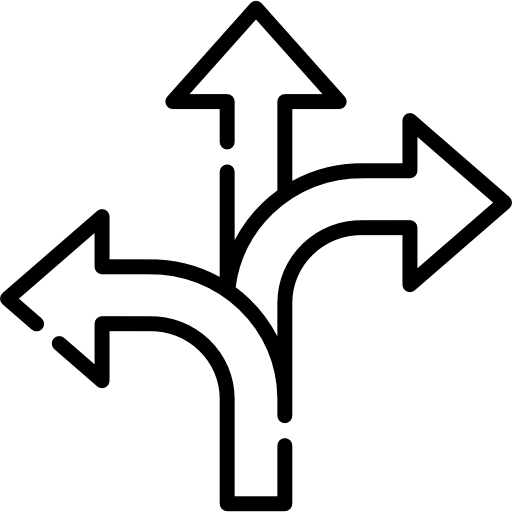

Eu sou um futuro programador.
Atualmente sou um estudante a caminho da carreira de programação.
Possuo muita paixão pelos códigos e sinto que programar é a profissão da minha vida.
Sobre mim
Tenho 21 anos e estou cursando Análise e Desenvolvimento de Sistemas;
Há algum tempo o interesse por programação despertou mais em mim, assim tomando iniciativa de começar os estudos de desenvolvimento web;
Tenho como meta adquirir o máximo de experiência na área, para que possa agregar em meu crescimento profissional;
Sinto que sempre tive facilidade de me envolver e interagir com a área de tecnologia;
Atualmente, me encontro buscando oportunidades! Desejo evoluir cada vez mais, tanto em desenvolvimento pessoal quanto profissional.
Experiências
Educacionais
| Curso | Instituição | Tempo | Situação |
|---|---|---|---|
| Língua Inglesa | Yep Escola de Inglês | 2016-2020 | Finalizado |
| Intercâmbio Estudantil (Dublin, Irlanda) | ISI Dublin English School | jan/2020 - fev/2020 | Finalizado |
| Língua Espanhola | Aula particular | maio/2021 - atualmente | Em progresso |
| Análise e Desenv. de Sistemas | Universidade do Vale do Rio dos Sinos | maio/2021 - atualmente | Em progresso (3° semestre) |
| Curso Web-Dev FullStack | Labenu | fev/2022 - julho/2022 | Em progresso |
Profissionais
| Função | Empresa | Tempo | Descrição |
|---|---|---|---|
| Auxiliar de operação de máquina | DaColônia Alimentos Naturais LTDA | julho/2020 - jan/2021 |
|
| Auxiliar de contabilidade | JLG Transportes | abril/2021 - fev/2022 |
|
Projetos
Mini-Projeto loja fícticia em HTML e CSS
A ideia é criar uma simples loja virtual com interações a diferentes páginas. A intenção é práticar os aprendizados de HTML e CSS vistos em aula.
Projeto Jogo Blackjack usando JavaScript

Jogo de cartas blackjack, também conhecido como 21, programado apenas com JavaScript para jogar no console com o próprio PC como oponente.
Skills
 |
 |
 |
|---|---|---|
| Adaptativo | Comunicativo | Flexível |
| Sinto que indepente da situação ou necessidade, me adapto de forma tranquila. | Comunicação e transparência são fatores muito importantes em um ambiente empresarial. | Sempre preparado para o rumo que os desafios podem tomar por conta de imprevistos. |